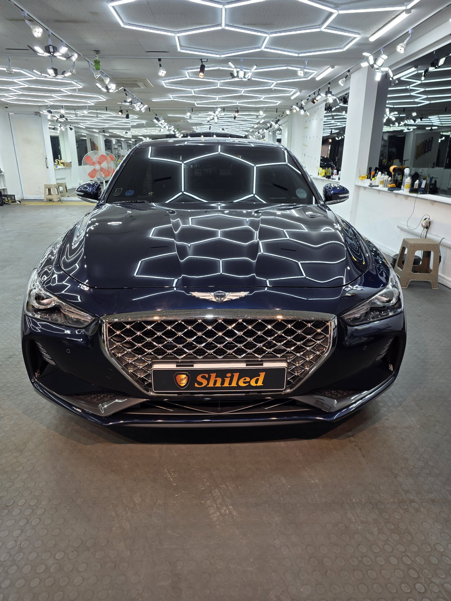
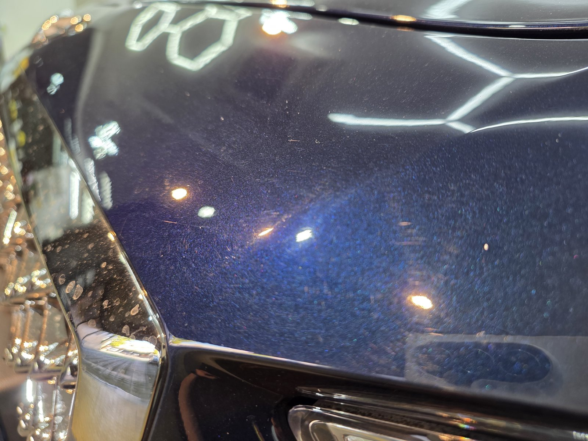
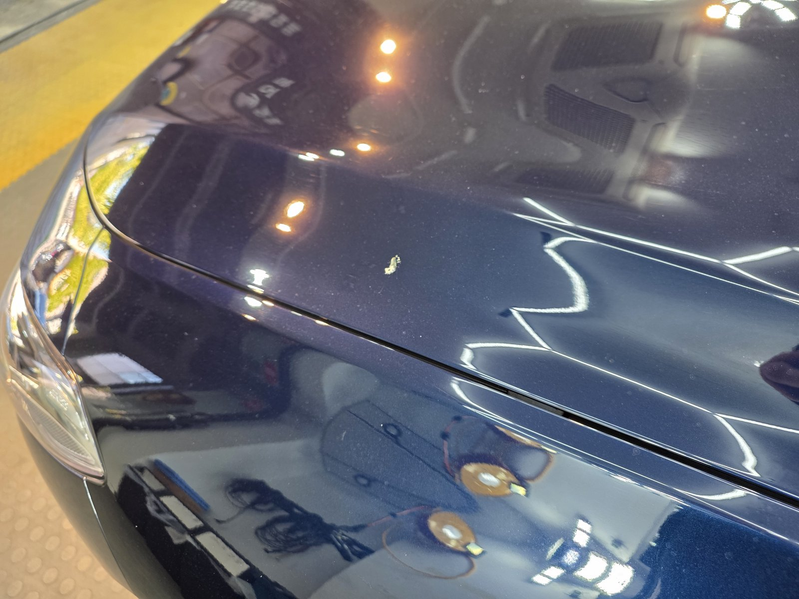
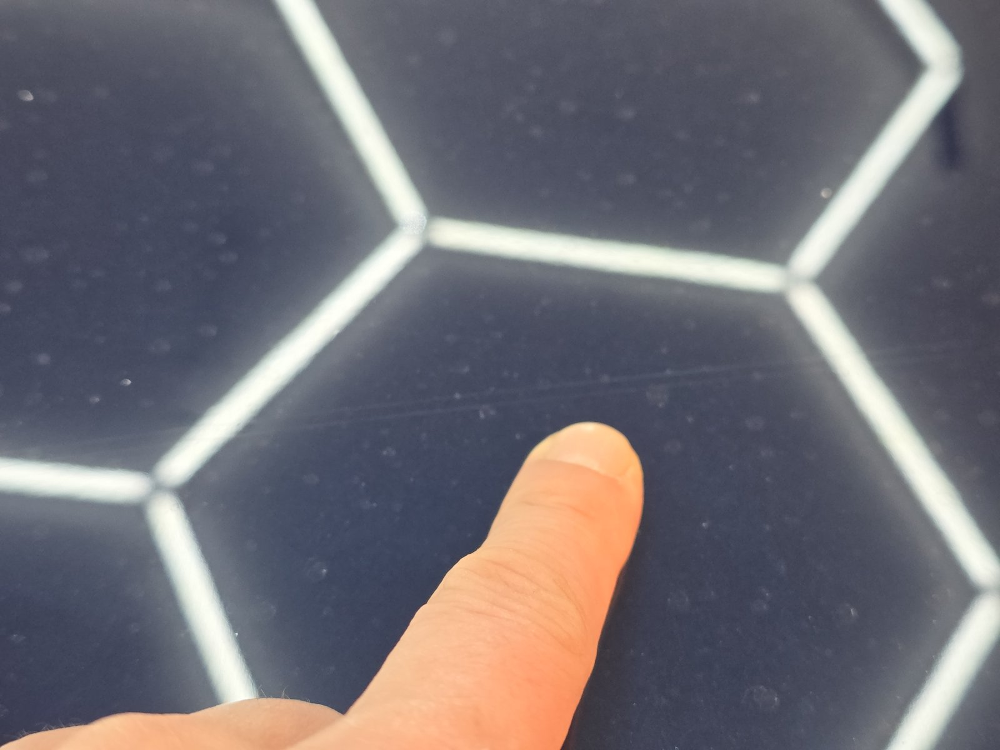
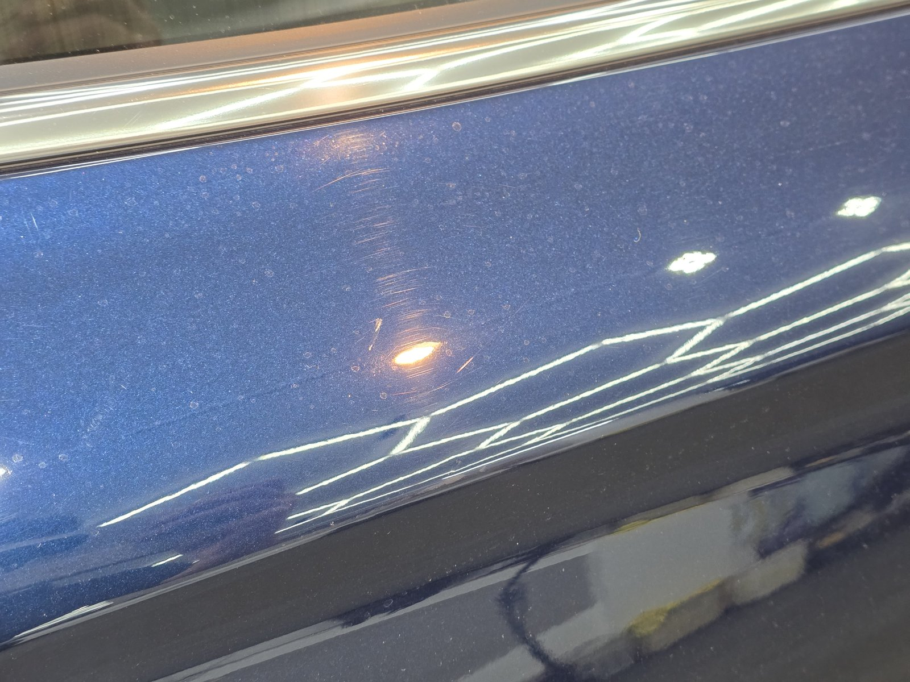
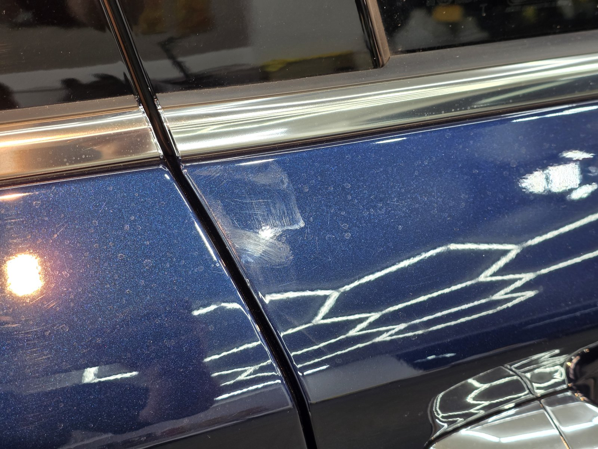
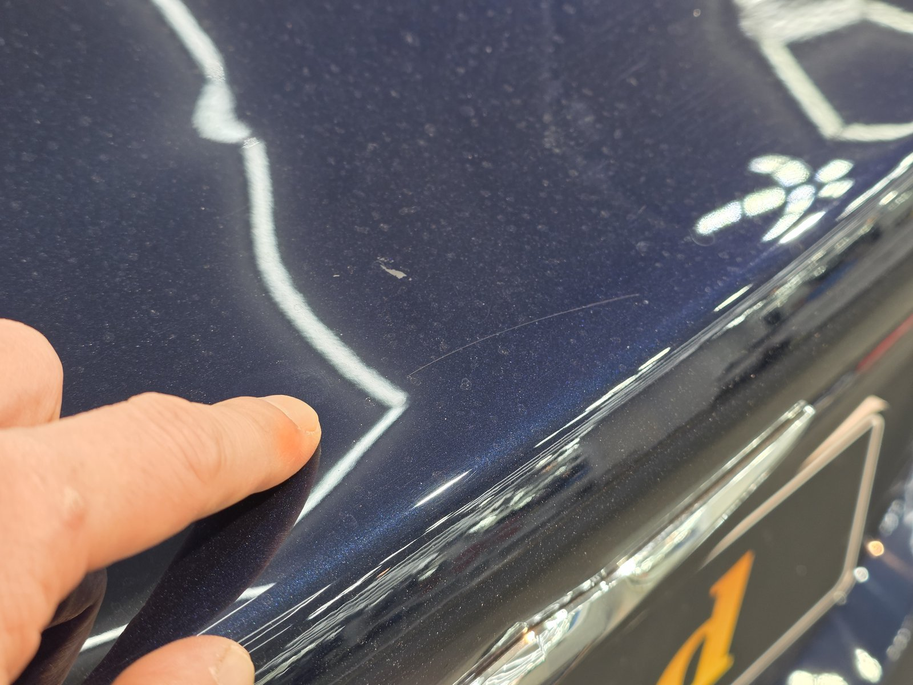
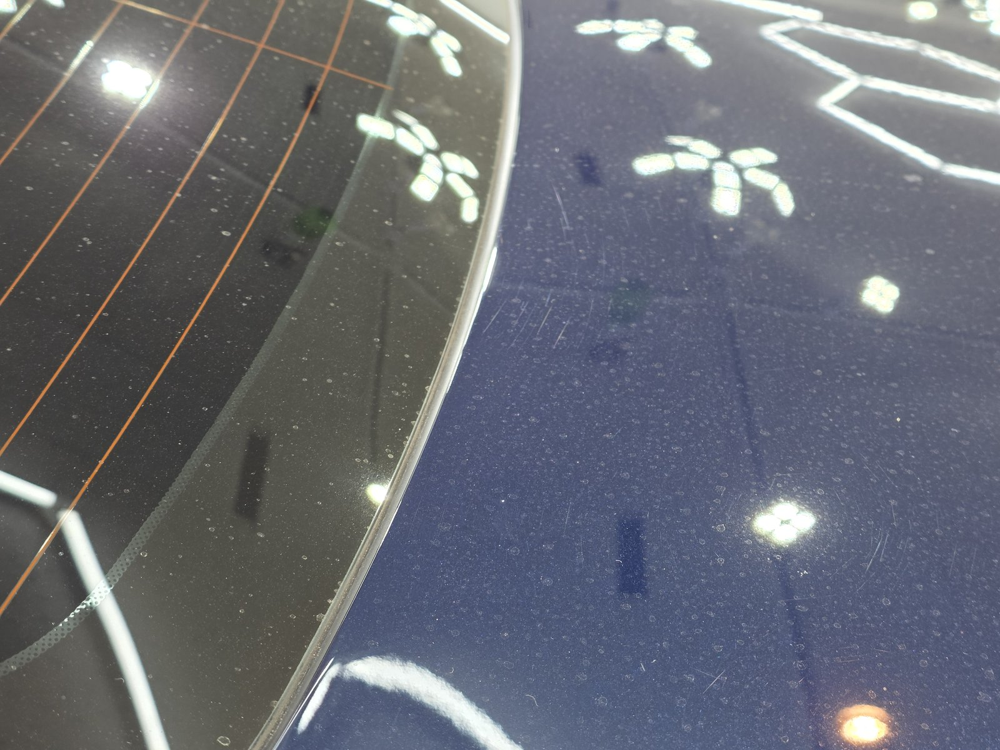
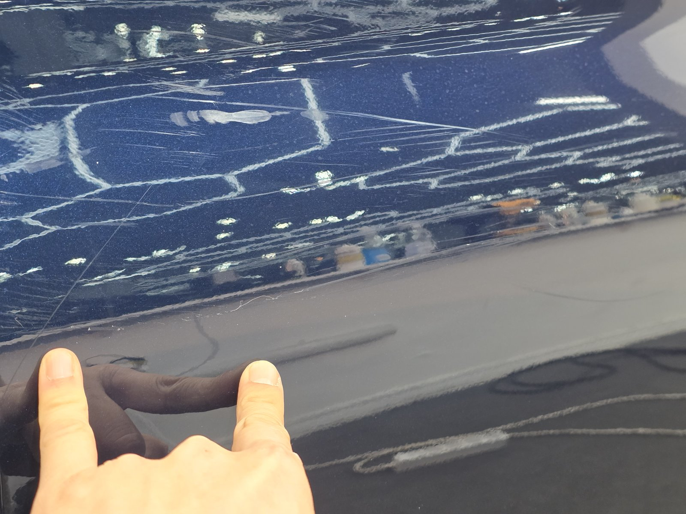

제네시스 G70, 블루 메탈릭입니다.
도장면 곳곳에 작은 점이 앉아 있다며 들어온 차입니다.
페인트 날림입니다.
부산 광택 작업으로 날림을 걷어내고 듀얼코팅까지 진행했습니다.

페인트 날림은 어떻게 찾나요?
조명과 손끝으로 찾습니다.
진한 블루 메탈릭은 멀리서 보면 깨끗해 보입니다.
그런데 육각 조명을 비스듬히 비추면 반사 사이사이에 작은 점들이 떠오릅니다.
손끝으로 쓸어보면 그 자리가 까끌하게 걸립니다.

입고 점검. 펜더 쪽 도장면에 작은 입자가 흩어져 있습니다

보닛 끝단. 밝은 색 도료 입자가 눈에 띕니다

손끝이 가리키는 자리 주변으로 미세한 점이 퍼져 있습니다
세차 자국도 같이 보였습니다
점검하다 보니 도어 쪽 조명 반사 안에 둥글게 도는 세차 자국도 보였습니다.
날림 입자가 얹힌 채로 문질러 세차하면 그 입자가 연마재 역할을 합니다.
그래서 날림 제거와 광택은 같이 가는 경우가 많습니다.

도어 상단. 조명 반사 안에 원형 세차 자국이 보입니다


트렁크 끝단까지 같은 방식으로 확인했습니다
부산 광택, 페인트 날림은 어떤 순서로 잡나요?
연마부터 들어가지 않습니다.
굳은 입자가 얹힌 채로 패드를 대면 그 입자가 도장을 긁습니다.
① 세차와 철분 제거로 표면 오염부터 걷어냅니다.
② 점토와 전용 약품으로 굳은 도료 입자를 떼어냅니다.
③ 광택으로 남은 미세 자국을 정리합니다.
그 위에 G-PRO와 G-TOP을 겹쳐 올리는 듀얼코팅으로 마무리했습니다.
G-PRO가 스크래치 내성을, G-TOP이 발수·방오를 맡는 조합입니다.

기술자의 팁
메탈릭 블루는 정면에서 보면 날림이 잘 안 보입니다. 해가 비스듬히 드는 시간에 옆에서 비춰 보시거나, 세차 후 손등으로 가볍게 쓸어 보십시오. 까끌하면 날림입니다.

이번 G70은 입고 점검 사진 위주로 남겼습니다.
남구 대연동 매장에서 같은 방식으로 점검하고 작업합니다.
자주 묻는 질문
Q. 페인트 날림은 광택만으로 지워지나요?
A. 바로 광택부터 하면 안 됩니다. 굳은 도료 입자를 먼저 점토와 전용 약품으로 떼어낸 뒤, 남은 미세 자국을 광택으로 정리합니다.
Q. 메탈릭 도장은 날림이 왜 잘 안 보이나요?
A. 메탈릭 입자가 빛을 흩뜨려서 작은 점이 묻힙니다. 비스듬한 조명이나 손끝 촉감으로 확인하는 게 정확합니다.
Q. 날림 제거 후 왜 코팅을 하나요?
A. 광택으로 정리한 도장면은 보호막이 없는 상태입니다. 이번 G70은 G-PRO+G-TOP 듀얼코팅으로 스크래치 내성과 발수·방오를 함께 올렸습니다.
Q. 페인트 날림은 어디서 생기나요?
A. 주변 도장 작업이나 공사 현장에서 날아온 도료가 바람을 타고 차에 내려앉아 굳은 것입니다.
Q. 쉴드광택 위치와 예약은 어떻게 하나요?
A. 부산 남구 유엔로220 1F 쉴드광택입니다. 예약·상담은 010-3384-1850, 대표 최한중이 직접 상담하고 책임 시공합니다.
멀리서 깨끗해 보인다고 없는 게 아닙니다.
제품을 직접 만드는 사람이 직접 작업합니다.
부산에서 페인트 날림 제거와 광택을 고민 중이시면 편하게 연락 주십시오.
어떤 차를 타냐보다 어떻게 타냐가 중요합니다~!
시공 중에는 전화를 받지 못할 때가 많습니다.
카카오톡으로 차종과 원하시는 시공을 남겨주시면 확인 후 답변드립니다.
쉴드광택 · 부산 남구 유엔로220 1F · 대표 최한중